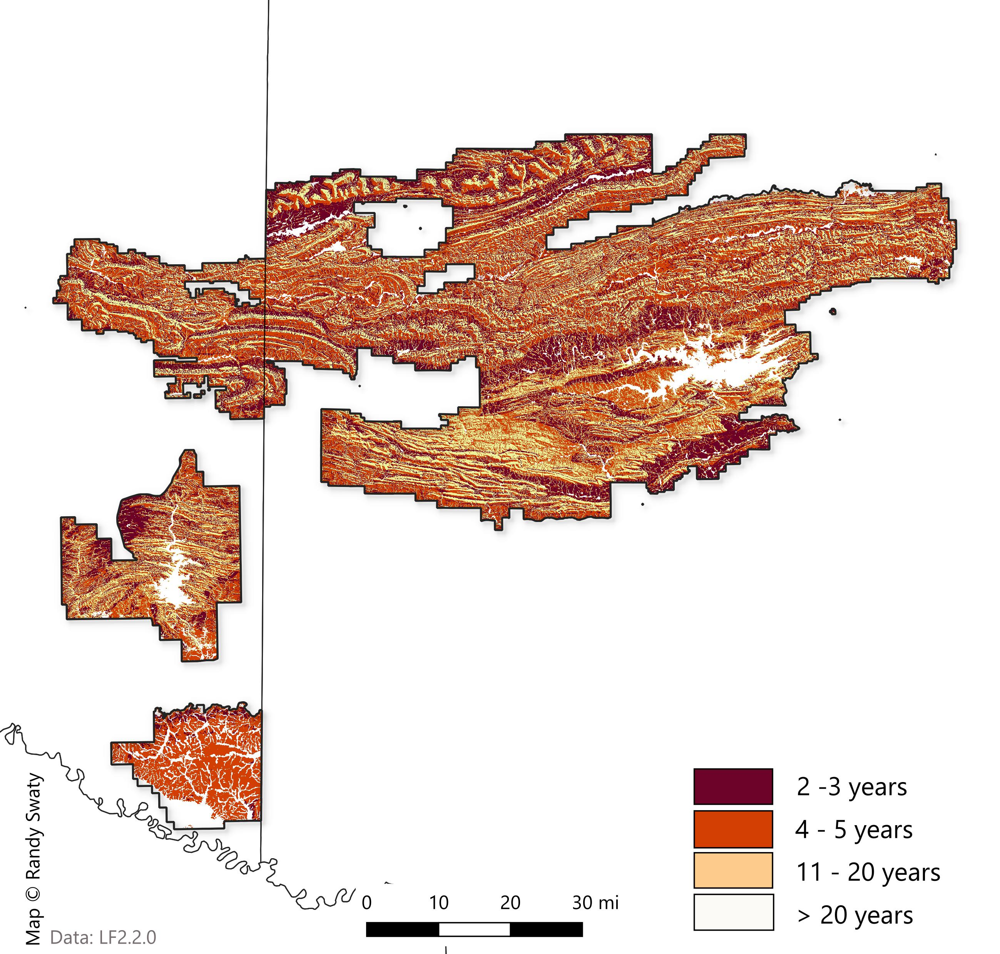

Past: Historical Ecosystems
LANDFIRE’s Biophysical Settings (BpSs)
BpS models represent the vegetation system that may have been dominant on the landscape prior to Euro-American settlement. These models are based on a combination of the current environment and an approximation of the historical disturbance regime. Read more.
Check out this 3-minute tutorial for a quick refresher on the basics of Biophysical Settings Models.
Use this page as a starting point to explore the most prevalent BpSs in the SRFSN Colorado Plateau Subregion. In addition to the charts and maps, the historical disturbance data can be directly accessed using this site.
Summary
Most Prevalent Biophysical Settings

Historic Annual Acres Burned (per ecosystem)
Top Historical Fire Regimes

Historical Disturbances (per ecosystem)
Data Table
| ZONE | BPS_MODEL | BPS_NAME | GROUPVEG | FRI_REPLAC | FRI_MIXED | FRI_SURFAC | FRG_NEW | ACRES | REL_PERCENT |
|---|---|---|---|---|---|---|---|---|---|
| 44 | 15070_44 | Ozark-Ouachita Shortleaf Pine-Bluestem Woodland | Hardwood-Conifer | 100 | 1,223 | 2 | I-A | 696,173 | 25.5 |
| 44 | 13040_32_43_44_49 | Ozark-Ouachita Dry-Mesic Oak Forest | Hardwood | 188 | 66 | 15 | I-B | 666,401 | 24.4 |
| 44 | 13670_32_44 | Ozark-Ouachita Shortleaf Pine-Oak Forest and Woodland | Conifer | 347 | 92 | 5 | I-A | 522,660 | 19.1 |
| 44 | 13640_32_44_49 | Ozark-Ouachita Dry Oak Woodland | Hardwood | 38 | 89 | 6 | I-A | 392,700 | 14.4 |
| 44 | 13340_32_43_44 | Ozark-Ouachita Mesic Hardwood Forest | Hardwood | 316 | 110 | 25 | I-C | 118,017 | 4.3 |
| 44 | 13710_44 | West Gulf Coastal Plain Pine-Hardwood Forest | Hardwood-Conifer | 121 | 52 | 5 | I-A | 92,264 | 3.4 |
| NA | NA | Open Water | Open Water | NA | NA | NA | NA | 63,695 | 2.3 |
| 44 | 14712_44 | Central Interior and Appalachian Floodplain Systems-Large Floodplains | Riparian | 142 | NA | 100 | III-A | 62,647 | 2.3 |
| 44 | 14730_32_37_44 | Gulf and Atlantic Coastal Plain Floodplain Systems | Riparian | 393 | 257 | 49 | III-A | 36,019 | 1.3 |
| 44 | 14740_32_37_44_45_98 | Gulf and Atlantic Coastal Plain Small Stream Riparian Systems | Riparian | 431 | 129 | 50 | I-C | 17,600 | 0.6 |
| 44 | 14152_44 | Arkansas Valley Prairie and Woodland-Woodland | Grassland | 96 | 14 | 2 | I-A | 12,714 | 0.5 |
| 44 | 13780_37_44 | West Gulf Coastal Plain Sandhill Oak and Shortleaf Pine Forest and Woodland | Hardwood-Conifer | 159 | 390 | 5 | I-A | 11,377 | 0.4 |
| 44 | 14151_44 | Arkansas Valley Prairie and Woodland-Prairie | Grassland | 2 | 344 | 12 | II-A | 7,927 | 0.3 |
| 44 | 14280_37_44 | West Gulf Coastal Plain Northern Calcareous Prairie | Grassland | 1,280 | 7 | 7 | I-A | 9,165 | 0.3 |
| 44 | 13120_44 | Ouachita Montane Oak Forest | Hardwood | 38 | 89 | 6 | I-A | 5,316 | 0.2 |
| 44 | 14800_36_37_44 | Gulf and Atlantic Coastal Plain Swamp Systems | Riparian | 1,020 | NA | 685 | V-A | 5,365 | 0.2 |
| 44 | 15060_37_44 | West Gulf Coastal Plain Nonriverine Wet Hardwood Flatwoods | Hardwood | 308 | 130 | 38 | I-C | 4,431 | 0.2 |
| 44 | 13230_32_36_37_44_45_98 | West Gulf Coastal Plain Mesic Hardwood Forest | Hardwood | 271 | 90 | 23 | I-C | 2,540 | 0.1 |
| 44 | 14580_37_44_45_98 | West Gulf Coastal Plain Pine-Hardwood Flatwoods | Hardwood-Conifer | 179 | 104 | 5 | I-A | 3,055 | 0.1 |
| NA | NA | Barren-Rock/Sand/Clay | Barren-Rock/Sand/Clay | NA | NA | NA | NA | 24 | 0.0 |
| 44 | 14930_41_42_44_50 | Central Interior and Appalachian Shrub-Herbaceous Wetland Systems | Riparian | 17 | NA | NA | II-C | 182 | 0.0 |